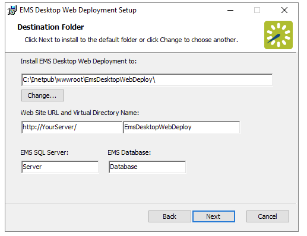
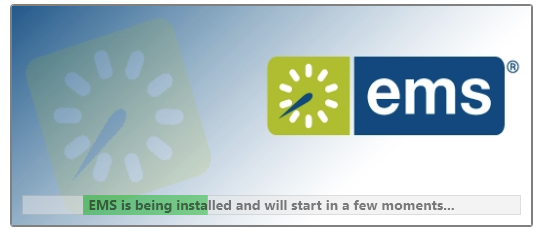
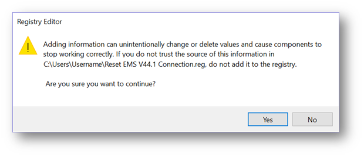
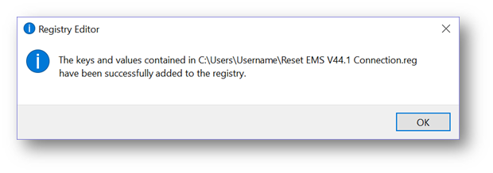
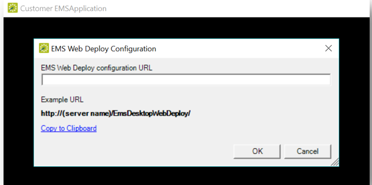
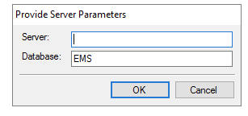

Installation Instructions
This topic will discuss the following installation steps:
-
Preparation: Installing EMS Server Components
-
Installing EMS on User's Computers
-
EMS Desktop Client Web Deployment
-
Install EMS Desktop Client (Web Deployment Method)
-
Installing [%=General.EMS Desktop Client%] (Conventional Method)
-
Obtain Installation Files for [%=General.EMS Desktop Client%]
In order to install EMS, you must perform two operations :
- Preparation: install server components.
- Install the application on user's computers.
See Also: EMS Desktop Client Deployment Options for a more in-depth discussion.
Preparation: Installing EMS Server Components
The server installation process will create two EMS databases on your MS SQL Server: An EMS_Master database that contains licensing information and a separate EMS database that will ultimately contain your reservations data.
Note: A Microsoft SQL Server SA level account is required to execute the database installation process.
- Verify that the prerequisite software has been installed.
- Secure the EMS.ServerInstall.exe file.
- Run EMS.ServerInstall.exe as an Administrator. (This .exe can be run from any PC that has access to your database server.)
EMS Server Install/Upgrade Utility

- In the Server text box, enter the name of the server running MS SQL Server.
- In the Database text box, enter the name for your EMS database. (It is recommended that you accept the default value of ‘EMS’.)
- In the Server Authentication area, specify your MS SQL Server authentication credentials. If SQL Server Authentication Mode is selected, you will be required to specify a User Name and Password.
- Click the Execute button. A Create Database dialog box will appear.
- Click Yes to initiate the EMS database installation process.
Note: The time spent on the “Upgrading database…” phase in the installation process is highly dependent on the size of your database. Please be patient.
- Click OK when you receive the “Database Installed Successfully!” message.
You have completed installing the server portion of EMS. Next you will install the software to client computers.
Installing EMS on User's Computers
After your EMS databases have been created on your database server, you must install the client software on each computer that will access your EMS database, using one of the following methods:
- EMS Desktop Client Web Deployment
- Installing EMS Desktop Client (Conventional Method)
Important: Before beginning the installation process, please install or upgrade your EMS databases. Existing versions of EMS Desktop Client Web Deployment must be manually uninstalled. Be sure to copy-off and save any files that have been customized.
See Also: Decision Guide
EMS Desktop Client Web Deployment
Important: Before beginning the installation process, please install or upgrade your EMS databases.
Existing versions of EMS Desktop Client Web Deployment must be manually uninstalled. Be sure to copy-off and save any files that have been customized.
Web Deployment Pre-Installation Instructions
- Manually uninstallany previous versions of EMS Desktop Client Web Deployment on your web server.
- Verify that the prerequisite software has been installed.
- Download the EMSDesktopWebDeploySetup.msi file onto the web server that will be running The EMS Desktop Client Web Deployment.
- Run EMSDesktopWebDeploySetup.msi as an administrator.
- The first screen welcomes you to The EMS Desktop Client Web Deployment Setup Wizard. Click Next to begin the installation process. The Destination Folder screen will appear.
Destination Folder of the EMS Desktop Web Deployment Setup

- Select the destination folder. The installation process will create a new physical directory on your web server based on the destination folder path entered (“EMS Desktop Web Deploy” in the example above.).
- Enter your SQL Instance Name.
- Enter your Database Name:
- EMS Professional customers – typically named “EMSdata”
- EMS Workplace, EMS Campus, EMS Enterprise, EMS District and EMS Legal customers - typically named “EMS”
- The Virtual Directory Name will default to the destination folder specified in Step 6. It is recommended that you keep the default setting. The installation process will create a virtual directory on your web server based on the virtual directory entered (“EMS Desktop Web Deploy” in the example above.) Click Next.
Note: The EMS Desktop Client Web Deployment should not be installed in the same virtual directory as other EMS web-based products OR under a site running another version of the EMS Desktop Client Web Deployment.
- The Ready to install the EMS Desktop Client Web Deployment screen will appear. Click to install The EMS Desktop Client Web Deployment.
- The Completed the the EMS Desktop Client Web Deployment Setup Wizard screen will appear. Click Finish.
- After following the steps above, verify your EMS Desktop Client Web Deployment installation by opening a browser and entering the address:
http://[ServerName]/EMSDesktopWebDeploy/ (replace [ServerName] with the name of your web server)
Note: The first time you launch the EMS Desktop Client Web Deployment, it may take a few extra moments for the website to display. If you encounter any issues, please contact Customer Support for assistance.
Install EMS Desktop Client (Web Deployment Method)
- To install the EMS Desktop Client, users will need to access the URL from the EMS Desktop Client Web Deployment.
EMS Desktop Client Web Deployment

Note: If your browser has a popup blocker it should be disabled so that both the EMSApplication.exe and the configuration file can be downloaded.
- Click Download and Install the EMS Desktop Client to download the EMSApplication.exe.
- Run the EMSApplication.exe. This will install the client locally from the service:
EMS Desktop Client Install Screen

Note: When you launch the EMSApplication.exe if it asks for the EMS Web Deploy configuration URL it will require entering the EMS Desktop Client Web Deployment URL:
http://[ServerName]/EMSDesktopWebDeploy/ (replace [ServerName] with the name of your web server)
- The EMS icon will be placed on the users desktop.
Notes: When a user launches the client it will check the EMS Desktop Client Web Deployment for a new version of the Client.
Clients installed through the EMS Desktop Client Web Deployment will not require administrative permission to install.
- The system displays a message asking you to import your registration information. Click OK.
- The Registration screen appears. Follow the instructions outlined on the screen to import your EMS license key.
Note: Your license key only needs to be imported once.
- At the EMS log-in screen, type admin as both the User ID and the Password.
- Click OK.
Note: When an EMS Client is installed through the EMS Desktop Client Web Deployment it will only be able to connect to the EMS instance received from the service.
Switching Between Environments for EMS Desktop Client Web Deploy
Users may want to switch their EMS Desktop Client between on-premise test and production environments, between on-premise and cloud hosted environments, or between cloud hosted test and production environments.
Notes: The EMS Desktop Client runs from the executable file located here: C:\Users\Username\AppData\Roaming\EMS2016\EMSApplication.exe. Because we can’t point to any two of these environments with the same EMS executable Desktop Client file, users must clear the EMS registry entry and then point to the desired environment.
-
Clear the EMS registry entry by utilizing the “Reset EMS V44.1 Connection.reg” file. The content of this file is as follows:
Windows Registry Editor Version 5.00
[HKEY_CURRENT_USER\SOFTWARE\EMS Software\Version 44.1]
"AppFacadeUrl"=-
Note: This file can be shared with users via SFTP as most e-mail programs will block attachments with the .reg extension. Alternatively, the file can be renamed with a .txt extension and then renamed again on the user side back to .reg. Or users can copy the three lines above into a text editor and save the file as “Reset EMS V44.1 Connection.reg.”
- Save the registry editor file “Reset EMS V44.1 Connection.reg” on the hard drive of the EMS Desktop Client user and run it.
- Click “Yes” to the following warning:

- Click “OK” to the second informational message:

- Launch the Desktop Client from the EMS Desktop Client executable file or EMS icon .
- Enter the EMS Desktop Client URL corresponding to the desired environment in the EMS Web Deploy Configuration window and click “OK”. This will launch the EMS Desktop Client for the specified environment.

- Settings are saved from the last time the EMS Desktop Client was accessed.
- These steps must be repeated only when a user wants to switch environments.
Installing (Conventional Method)
Follow these instructions to conventionally install the on individual workstations.
Pre-Installation Instructions
- Enable the Windows Component .NET 4.5 be on the client machine. The client must also have access to the EMS Server component (to the Desktop Client API, or directly to the EMS Database).
- Obtain the Required MSI file (see Obtain Installation Files for [%=General.EMS Desktop Client%] below).
- Log in to the EMS Product Portal.
- Navigate to the Software & Documents Library > New Releases and Patches > EMS Desktop Clients (Conventional and Web Deploy).

Note: When you install, the application loads into the "Program Files", "Program Files (x86)", (or a custom directory that you specify). The first time the application is run by a user it will prompt the user to enter in the Server and Database. These entries are saved in the user's registry. The next time the application is accessed, it will not prompt the user for this information again. If upgrading from a previous version, the desktop client will search for the connection string from the previous version, and update the current version so the user is not prompted to enter that information.
Set the Server Programmatically
Option 1: Set the registry keys for the user
The Server and Database information are stored in Keys in the following location:
32bit Machines: HKEY_CURRENT_USER\Software\EMS Software\Version44.1
There will be two string values—one for the server and one for the database.
Option 2: Use switches in the executable
There are two switches that can be used with the applications executable (ems.exe). You can use these within a shortcut that you give to the user to specify the Server and Database for them.
/s=Servername.domain.local
/d=DatabaseName
- Replace "
Servername.domain.local" with the Domain name of your Database Server and DatabaseName with the Database of the Database of EMS that the user needs to connect to.For Example "C:\Program Files(x86)\EMS\EMS.exe /s=Servername.Domain.local /d=DatabaseName"
Establish Network Connections
The conventional connects directly to the database server for all related transactions. The may also need to connect to the following services:
- EMS Web Server
- SMTP Server
- LDAP Server
- Verify that the prerequisite software has been installed.
- Secure the EMSClient.msi. (See Obtain Installation Files for [%=General.EMS Desktop Client%] below.)
- Run EMSClient.msi on the client workstation. Follow the on-screen prompts. It is recommended that you accept the defaults.
- Start EMS from the shortcut located on your desktop.
- In the Provide Server Parameters dialog box, enter the name of your EMS Server and Database.
Provide Server Parameters Dialog

- Click OK.
- The system displays a message asking you to import your registration information. Click OK.
- The Registration screen appears. Follow the instructions outlined on the screen to import your EMS license key.
Note: Your license key only needs to be imported once.
- At the EMS login screen, type admin as both the User ID and the Password.
- Click OK.
- You are now ready to begin using the system. You can begin defining your data following the instructions in Setting Up EMS or you can install to additional client computers by repeating steps 1-6 above.
Obtain Installation Files for
The latest release of EMS can be downloaded from the online Support Center.
- Download the following files. (Required for both first time installations and upgrades.)
- EMS License (License.lic)—License file required to activate your EMS software.
- EMS Server Install (EMS.ServerInstall.exe)—File used to install or upgrade the EMS databases on your Microsoft SQL Server.
- EMS Client (EMSClient.msi)—File used to install or upgrade the EMS desktop application.
- EMS Email Notification (EMSEmailNotificationSetup.msi)—File used to install the EMS Email Notification service (an optional system component.) See Installing the EMS Email Notification Service.
- EMS Campus Auto Sync Service (EMSCampusAutoSyncSetup.msi)—EMS Campus only. File used to install the optional EMS Campus Auto Sync Service (an optional system component.) See Installing the EMS Campus Auto Sync Service.